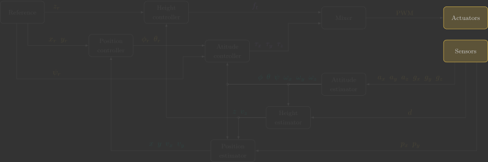
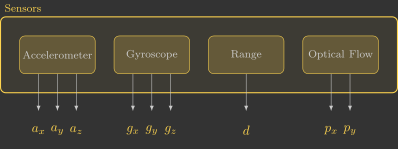

Sensors
In this section, you will implement the sensors() function, which reads raw measurements from the accelerometer (\({\color{var(--c3)}a_x}\), \({\color{var(--c3)}a_y}\) and \({\color{var(--c3)}a_z}\)), gyroscope (\({\color{var(--c3)}g_x}\), \({\color{var(--c3)}g_y}\) and \({\color{var(--c3)}g_z}\)), range sensor (\({\color{var(--c3)}d}\)) and optical flow sensor (\({\color{var(--c3)}p_x}\) and \({\color{var(--c3)}p_y}\)) by retrieving data from the firmware's internal sensor pipeline.

Overview
The following diagram illustrates the internal structure of the sensors function:

Before we begin, it is important to understand a few key concepts:
- Sensor measurements in the Crazyflie are processed by the state estimation system and delivered through an internal queue. We use the
estimatorDequeue(&m)function to retrieve the next measurement and store it in themeasurement_t mstructure. The type of measurement is identified bym.type. - The estimator continuously receives high-frequency data from the IMU (accelerometer and gyroscope), the range sensor (ToF lidar), and the optical flow camera.
Implementation
The estimator continuously receives measurements from all onboard sensors and stores them in an internal queue. Our task is to retrieve these measurements one by one.
Each measurement contains a type identifier, which tells us which sensor produced the data. We use a switch statement to process each measurement accordingly.
For the accelerometer and gyroscope, the readings are converted to SI units (\(\text{m/s}^2\) and \(\text{rad/s}\), respectively). The range sensor already provides measurements in \(\text{m}\), while the optical flow sensor values are scaled from tenths of a pixel to pixels.
The code below implements this logic.
67 68 69 70 71 72 73 74 75 76 77 78 79 80 81 82 83 84 85 86 87 88 89 90 91 92 93 94 95 96 97 98 99 100 101 102 103 | |
You can simply copy and paste the code above. However, take some time to understand what each line does (the comments are there to guide you).